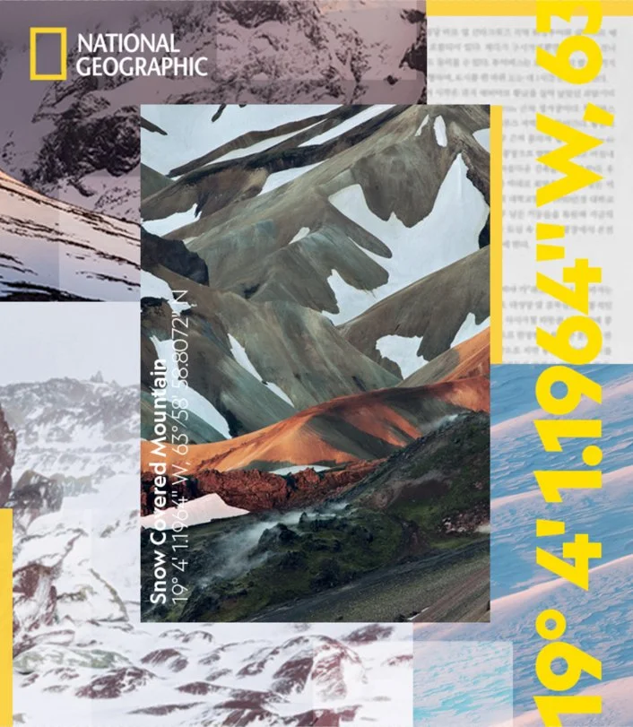
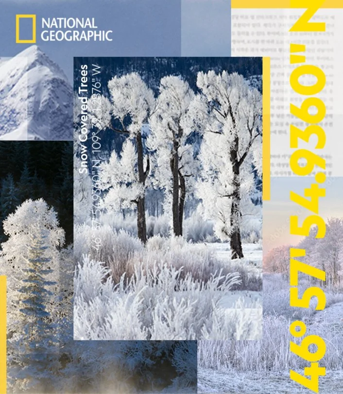
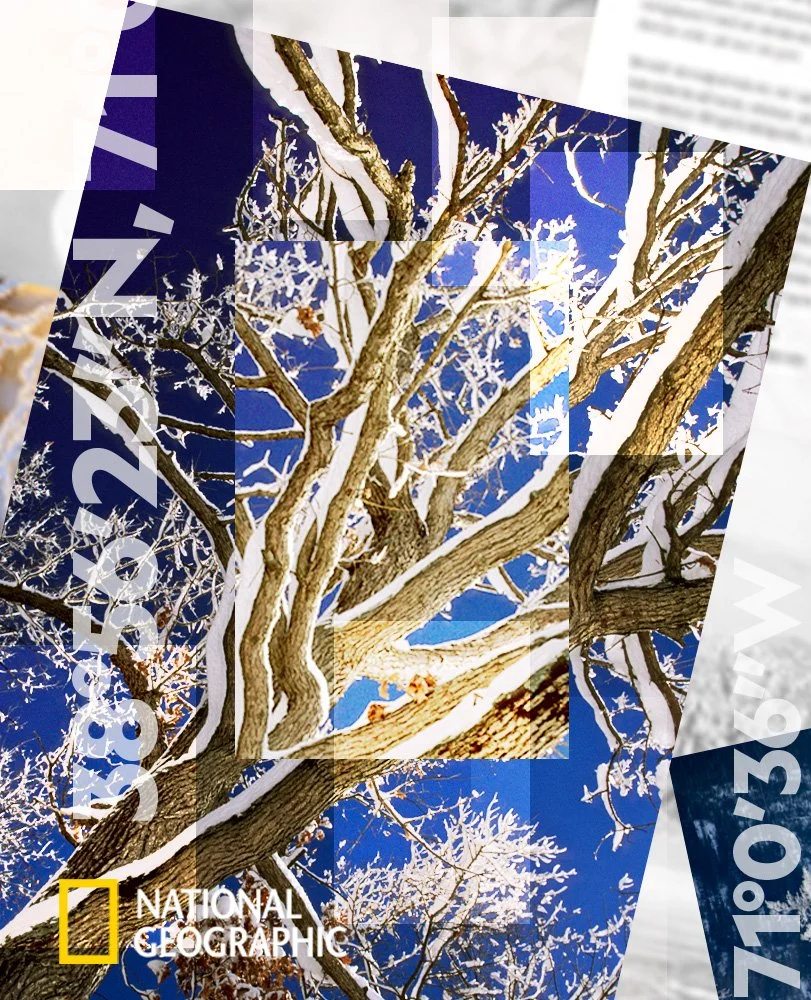
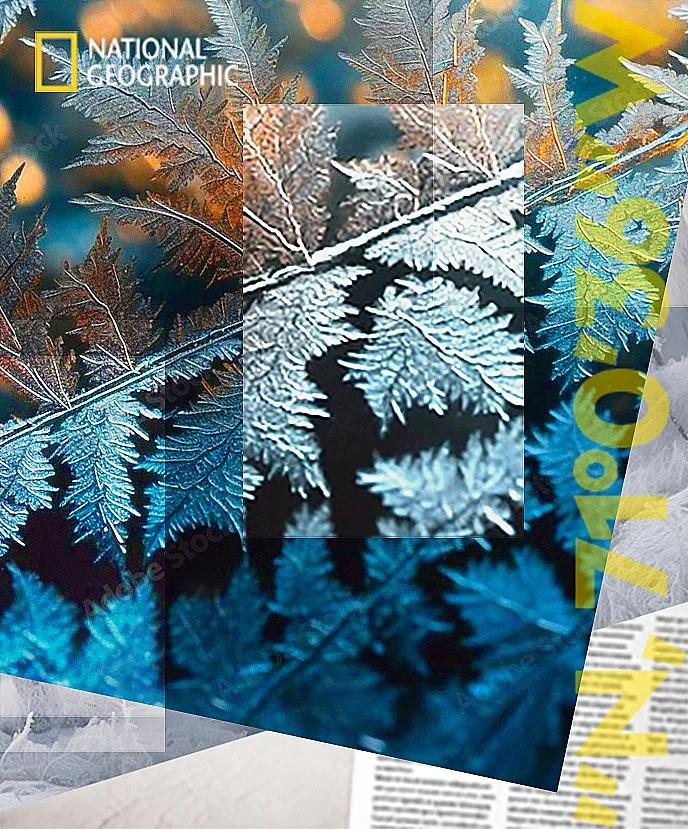
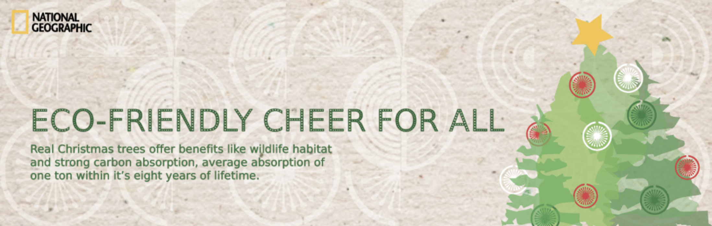
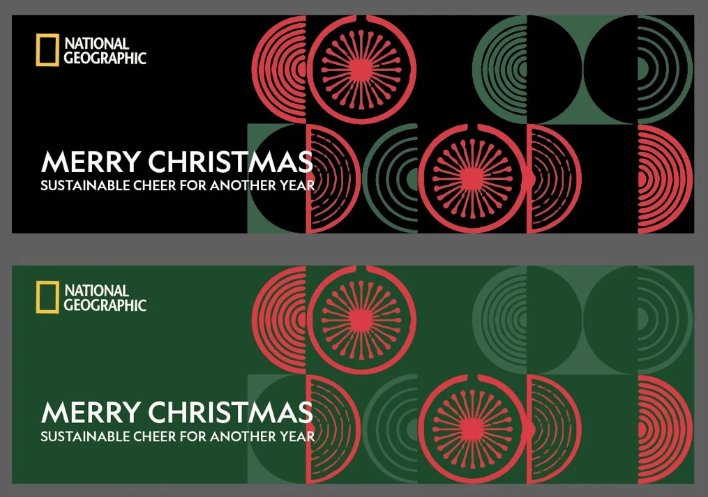
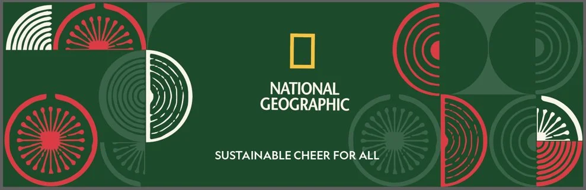
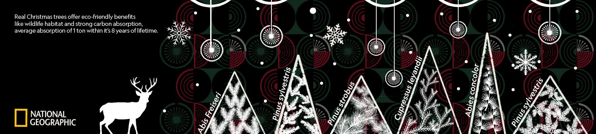
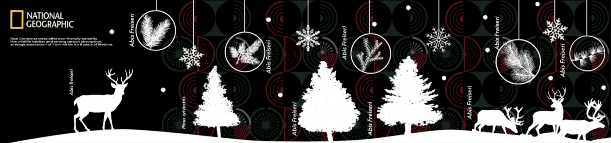

National Geographic Retail Toolkit
A retail system built to hold its shape across licensees and markets nobody on the team would visit.

- Client
- The Walt Disney Company
- Location
- APAC region
- Year
- 2022–2023
- Role
- Creative Manager, APAC
- Scope
- Retail toolkit creation, graphics production, licensee management
Toolkits are where brand governance actually happens. This one packaged National Geographic’s retail expression into graphics and specifications that regional licensees could execute without a designer in the room.
The work ran from graphics production through licensee management — writing the rules, then holding the line on them.







